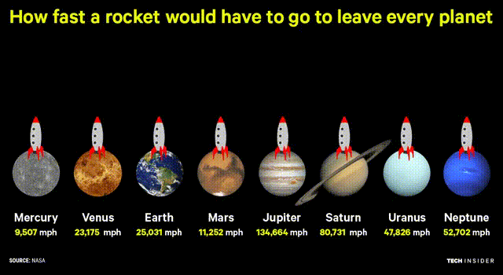

치올콥스키 로켓 방정식(Chil's rocket equation)은 로켓의 진행 방향으로 추진력을 발생시키는 엔진의 작동과 로켓의 질량 변화에
대한 수학적 관계를 설명하는 방정식입니다.이 방정식은 로켓 엔진의 속도 및 효율성, 로켓의 질량 변화, 로켓의 총 속도 변화량 등을 계산하는 데에 사용됩니다.
이를 통해 로켓 설계자들은 로켓의 엔진 크기,
연료 양, 탑재할 수 있는 유용한 하중의 양 등을 결정할 수 있습니다.
치올콥스키 로켓 방정식은 우주 탐사와 위성 발사 등의 우주 항공 기술 개발에 매우 중요한 역할을 합니다.
탈출 속도는 물체가 운동 에너지(속도)가 행성 등의 중력 위치 에너지(궤도 속도)를 넘는 속도를 의미합니다. 대체로 궤도 운동을 하는 천체나 위성 등의 중력장을 빠져나가기 위한 최소한도의 속도로 이해됩니다. 중력장을 벗어나기 위해서는 방향보다는 얼마나 빠르냐가 중요하므로, 학술적으로는 탈출 속도는 벡터가 아닌 스칼라 형태입니다.
